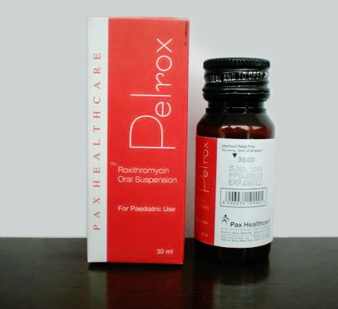

Indications:- Macrolide Antibiotic.
- 
Roxithromycin Suspension

Roxithromycin
SUSPENSION PRESENTATION:
Each 5 ml contains:
Roxithromycin BP 50 mg

Roxithromycin :
Roxithromycin is a semi-synthetic macrolide antibiotic. It is used to treat respiratory tract, urinary and soft tissue infections.It is widely used for treating different bacterial infections. The drug is derived from erythromycin, containing the same 14-membered lactone ring. It is available in oral suspension or tablets form.
It has been demonstrated by recent studies concomitant administration of an Roxithromycin shows significantly better symptoms relief with the modest improvement of lower respiratory tract infections and other Genital infection like Neisseria gonorrhoeae infection.

Roxithromycin :
- This Roxithromycin suspension is Used in Upper and lower respiratory tract infections.
- ENT infection.
- Genital infection (Neisseria gonorrhoeae infection).
- Skin and soft tissue infections.

Roxithromycin prevents bacteria from growing, by interfering with their protein synthesis. Roxithromycin binds to the subunit 50S of the bacterial ribosome, and thus inhibits the translocation of peptides. Roxithromycin has similar antimicrobial spectrum as erythromycin, but is more effective against certain gram-negative bacteria, particularly Legionella pneumophila.

- Roxithromycin prevents bacteria from growing, by interfering with their protein synthesis.
- Roxithromycin binds to the subunit 50S of the bacterial ribosome, and thus inhibits the translocation of peptides.
- Roxithromycin has similar antimicrobial spectrum as erythromycin, but is more effective against certain gram-negative bacteria, particularly Legionella pneumophila.

BEFORE TAKING THIS MEDICINE TELL THE DOCTOR ABOUT ANY MEDICAL PROBLEMS AN ALLERGIES THAT CHILD HAS NOW OR HAS HAD.
This Roxithromycin suspension has unique action and it help to cure Genital infection like Neisseria gonorrhoeae infection and Skin and soft tissue infections. Roxithromycin has fewer interactions than erythromycin as it has a lower affinity for cytochrome.Roxithromycin has fewer interactions than erythromycin as it has a lower affinity for cytochrome.
Roxithromycin does not interact with hormonal contraceptives, prednisolone, carbamazepine,
ranitidine or antacids.
When roxithromycin is administered with theophylline, some studies have shown an increase in the
plasma concentration of theophylline. A change in dosage is usually not required but patients with
high levels of theophylline at the start of the treatment should have their plasma levels monitored.

Most common side effects are
- Gastrointestinal
- Diarrhoea
- Nausea
- Abdominal pain and vomiting.
Less common side effects include central or peripheral nervous system events such as headaches, dizziness, vertigo, and also the rarely seen rashes.

- Hypersensitivity to roxithromycin.
- Concomitant use of ergotamine type compounds.

From the above discussion it can be conclude that this Roxithromycin suspension could improve the quality of life of childrens with Skin and soft tissue infections and Genital infection like Neisseria gonorrhoeae infection.